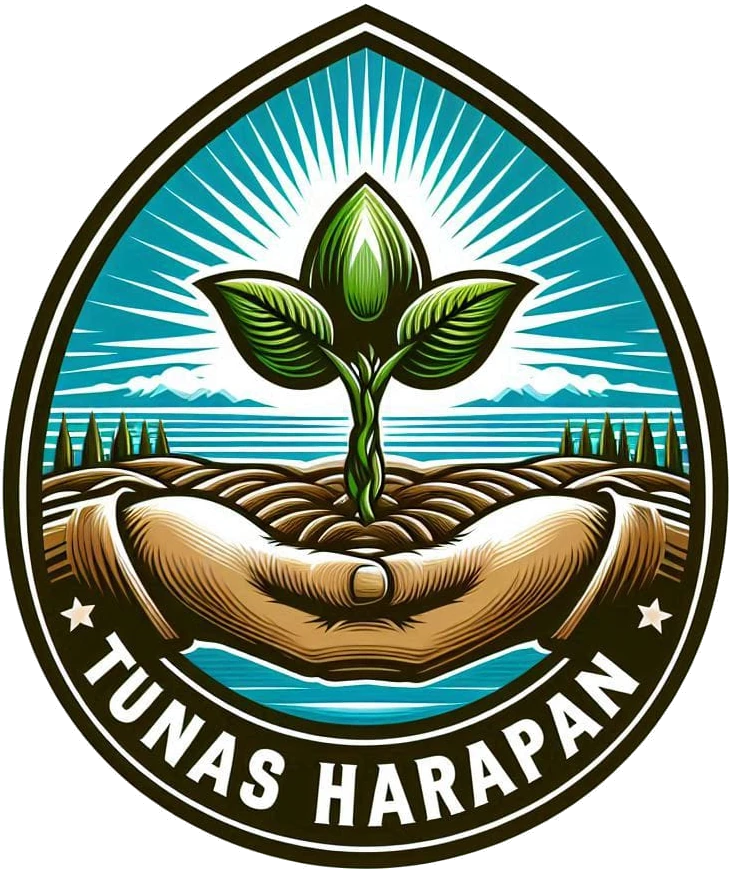

Direvitalisasi 2 Juli 2024
Kepengurusan baru ditetapkan melalui musyawarah dan diketahui oleh Koordinator BPP Pargarutan, Lurah Pasar Pargarutan, serta PPL WKPP Pargarutan Baru.
Pargarutan Baru · Angkola Timur · Tapanuli Selatan
Kami adalah 36 petani yang menggarap ±123 hektare lahan milik sendiri. Tanahnya subur, tekadnya bulat. Kini kami mencari mitra untuk tumbuh lebih cepat, lebih kuat, dan lebih berkelanjutan.

Lingkungan IV Pargarutan Baru
01 Siapa Kami
Setiap tunas memulai hidupnya dalam sebuah genggaman. Di Pargarutan Baru, genggaman itu adalah tangan-tangan petani yang memilih untuk bersatu — merawat tanah warisan, menjaga air, dan menumbuhkan kesejahteraan keluarga. Kami percaya: ketika petani berhimpun, setiap bantuan akan berlipat menjadi panen yang nyata.

Kepengurusan baru ditetapkan melalui musyawarah dan diketahui oleh Koordinator BPP Pargarutan, Lurah Pasar Pargarutan, serta PPL WKPP Pargarutan Baru.
Berdasarkan Pancasila dan UUD 1945, bersifat kemasyarakatan, dan mengambil keputusan lewat musyawarah mufakat.
Tidak berada di bawah pengaruh partai politik mana pun — dibentuk semata untuk kebersamaan dan kesejahteraan petani.

02 Makna di Balik Logo
Harapan dan generasi baru petani — kecil hari ini, kokoh dan berbuah esok hari.
Kekuatan yang lahir dari persatuan: helai-helai yang saling menguatkan tak mudah patah.
Kepedulian dan tanggung jawab — setiap amanah dan bantuan kami rawat dengan sepenuh hati.
Lahan produktif milik anggota sendiri, siap ditanami dan dikembangkan.
Semangat yang tak pernah padam dan masa depan pertanian yang cerah.
Komitmen pada alam lestari: perikanan, kehutanan, dan pertanian yang berkelanjutan.
03 Visi & Misi
“Terwujudnya kelompok tani yang mandiri, sejahtera, dan berdaya saing — tumbuh dari semangat kebersamaan dan kekeluargaan, demi kesejahteraan anggota dan masyarakat tani Pargarutan Baru.”
Dirumuskan dari Anggaran Dasar kelompok — dan kami jalankan setiap musim tanam.
Memfasilitasi kegiatan serta komunikasi timbal balik antaranggota agar setiap petani tahu, terlibat, dan saling menguatkan.
Meningkatkan produktivitas dan nilai tambah usaha tani anggota — dari pengolahan lahan hingga pascapanen.
Membina komunikasi dan kemitraan yang sinergis agar sumber daya dan program pembangunan pertanian tepat sasaran.
Menumbuhkembangkan sumber daya anggota agar berperan aktif dalam pemberdayaan ekonomi keluarga tani.
Mendorong setiap petani berkarya maksimal di subsektornya lewat tukar informasi, percontohan lahan, dan berbagi keterampilan.
04 Potensi Kami
Data berikut bersumber dari pendataan resmi kelompok yang disahkan PPL WKPP Pargarutan Baru.
Tersebar di sawah, ladang, kebun sawit, karet, durian, kopi, dan kolam ikan di Lingkungan IV Pargarutan Baru.
Milik anggota sendiri — investasi Anda tidak terancam sengketa sewa.
Terdaftar lengkap dengan data kependudukan, lahan, dan ternak.
Rp100.000 uang pangkal
Rp10.000 iuran / bulan
Bukti bahwa kami tidak sekadar menunggu bantuan — kami ikut menanam modal.
Kami berada di titik awal — dan justru di sinilah dukungan Anda berdampak paling besar. Target kami: naik kelas bersama mitra.


Sawit, karet, durian, dan kopi rakyat.
Ahmad SanusiSapi, kambing, dan ayam — sumber pupuk organik.
Abdul Muis HarahapBudidaya ikan kolam air tawar.
Eddi RubiantoKonservasi lahan, tanaman keras, dan penghijauan.
Fadhel HamidiPengelolaan sarana produksi: bibit, pupuk, alat.
Bokar HarahapMembuka akses pasar dan harga yang adil.
Herman PohanJembatan komunikasi dengan mitra & masyarakat.
Syamsul Armein05 Tata Kelola
Kami memahami: setiap rupiah hibah adalah amanah publik. Karena itu kami membangun organisasi dengan aturan, pendampingan, dan pertanggungjawaban yang jelas.
Berita Acara revitalisasi 2 Juli 2024, diketahui BPP Pargarutan, Lurah Pasar Pargarutan, dan PPL WKPP.
Hak, kewajiban, sanksi, dan masa jabatan pengurus (3 tahun) diatur tegas dan disepakati bersama.
Seluruh harta kelompok dipertanggungjawabkan secara tertulis dalam Rapat Kerja dan Musyawarah Anggota.
Bendahara menyusun laporan keuangan bulanan dan triwulan; setiap pemasukan dan pengeluaran wajib dicatat.
Keputusan lewat musyawarah mufakat; rapat pengurus sekurang-kurangnya empat kali setahun.
Pendampingan langsung oleh PPL WKPP Pargarutan Baru dan koordinasi dengan BPP Kecamatan Angkola Timur.
Seluruh anggota menggarap lahan milik pribadi — bantuan tepat sasaran dan berkelanjutan.
Organisasi independen; bantuan murni untuk kesejahteraan petani, bukan untuk kepentingan golongan.
06 Peluang Kemitraan
Setiap program dirancang sesuai kebutuhan nyata di lapangan dan dapat disesuaikan dengan skema bantuan Dinas Pertanian, kementerian, BUMN, maupun CSR perusahaan swasta.
Hand tractor, pompa air, dan perbaikan saluran irigasi sawah serta ladang.
Dampak: waktu olah lahan lebih singkat, indeks pertanaman sawah meningkat.
Bibit durian, kopi, dan karet klon unggul, serta dukungan peremajaan sawit rakyat.
Dampak: produktivitas kebun naik, komoditas bernilai tinggi untuk jangka panjang.
Pupuk berimbang, pupuk organik, dan pengendalian hama terpadu yang dikelola Seksi Saprodi sesuai RDKK.
Dampak: biaya produksi turun, kesehatan tanah terjaga.
Penguatan populasi sapi dan kambing, kandang komunal, pakan fermentasi, serta pengolahan kotoran menjadi kompos dan biogas.
Dampak: pendapatan tambahan keluarga dan pupuk organik untuk kebun sendiri.
Benih ikan, pakan, dan rehabilitasi kolam air tawar milik anggota.
Dampak: sumber protein dan penghasilan yang cepat berputar.
Sekolah lapang, lahan percontohan, pencatatan usaha tani digital, dan manajemen keuangan kelompok.
Dampak: SDM petani meningkat, kelas kelompok naik dari Pemula ke Lanjut.
Alat pengolahan dan pengemasan, gudang sederhana, serta kemitraan dengan pembeli (offtaker).
Dampak: harga jual lebih adil dan nilai tambah tetap di desa.
07 Alur Kemitraan
Hubungi sekretariat melalui formulir di bawah. Kami merespons dan menyiapkan profil kelompok lengkap.
Kami mengundang Anda meninjau lahan, bertemu anggota, dan memeriksa dokumen kelompok secara langsung.
Bersama PPL, kami menyusun proposal dan rencana anggaran yang selaras dengan RDK/RDKK kelompok.
Bantuan diterima, dicatat, dan dimanfaatkan sesuai keputusan musyawarah — terbuka bagi seluruh anggota.
Laporan penggunaan, foto kegiatan, dan capaian hasil kami serahkan secara berkala kepada mitra.
08 Struktur Organisasi
Periode kepengurusan 2024 — ditetapkan melalui Musyawarah Anggota.
36 anggota petani Lingkungan IV Pargarutan Baru — kekuatan sesungguhnya dari Tunas Harapan.
09 Lokasi
Pintu kami selalu terbuka. Datang, lihat sendiri lahan kami, dan bicaralah langsung dengan para petani.
10 Mari Bermitra
Untuk Dinas Pertanian, instansi pemerintah, BUMN, perusahaan swasta, dan lembaga donor: mari wujudkan ketahanan pangan dari desa — bersama petani yang siap, terorganisasi, dan akuntabel.